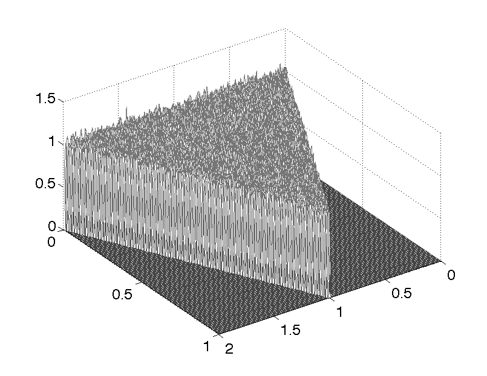

This is the readme for the model associated with the paper Esposito U, Giugliano M, van Rossum M, Vasilaki E (2014) "Measuring symmetry, asymmetry and randomness in neural network connectivity" PLoS One 9:e100805 The matlab code reproduces Figures 1, 2, 3A and 3C from the paper. To run it you need to use Matlab with Symbolic Math Toolbox and Statistics Toolbox. Content and usage: 1. Unzip Espositoetal2013_MatlabCode into an empty directory. The code is organized in 8 .m files. 2. To obtain the graphs of Fig. 1 run Uniform_PDFs.m (for Fig. 1A,B,C,D) and Uniform_PDFs_pruned.m (for Fig. 1E,F,G,H). For example the figure generated for 1D looks like:  3. To obtain the graphs of Fig. 2 run Gaussian_PDFs.m (for Fig. 2A,B,C,D) and Gaussian_PDFs_pruned.m (for Fig. 2E,F,G,H). 4. To obtain the graphs of Fig. 3A,C run Uniform_Statistics.m (for Fig. 3A) and Gaussian_Statistics.m (for Fig. 3C). 5. Uniform_Statistics.m calls sym_measure.m. 6. Gaussian_Statistics.m calls sym_measure.m and correl.m.